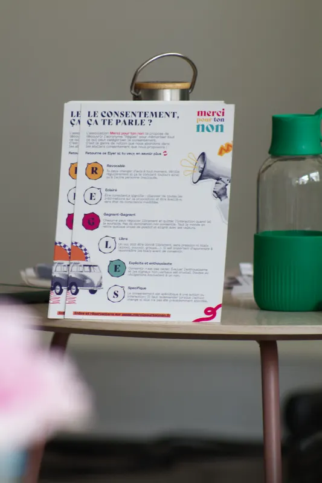
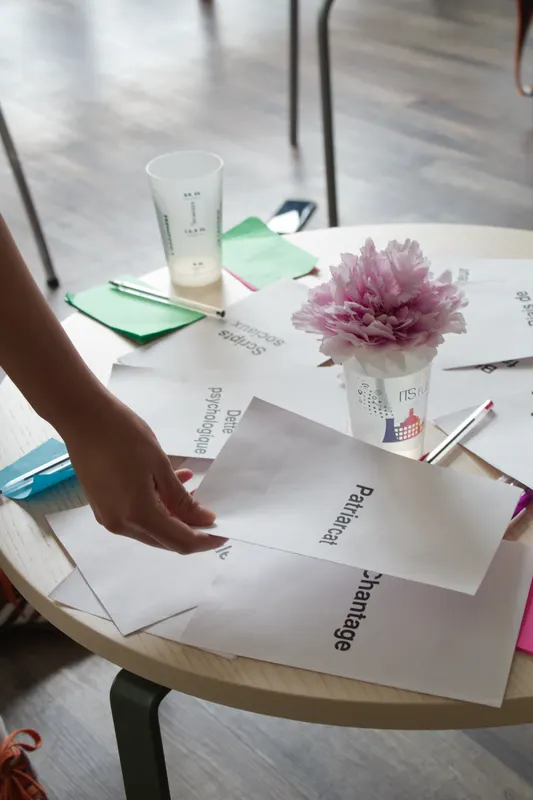

deux définitions
Le dictionnaire et la loi ne disent pas la même chose — et l'écart est parlant.
le dictionnaire
« Action de donner son accord à une action, un projet ; acquiescement, approbation, assentiment. »
Larousse. Une définition courte, qui dit peu de ce que demande un vrai oui.
la loi
Depuis la loi du 6 novembre 2025, le Code pénal (article 222-22) définit l'agression sexuelle à partir du non-consentement.
« Constitue une agression sexuelle tout acte sexuel non consenti commis sur la personne d'autrui ou sur la personne de l'auteur. »
« Le consentement est libre et éclairé, spécifique, préalable et révocable. Il est apprécié au regard des circonstances. Il ne peut être déduit du seul silence ou de la seule absence de réaction de la victime. »
« Il n'y a pas de consentement si l'acte à caractère sexuel est commis avec violence, contrainte, menace ou surprise, quelle que soit leur nature. »
Concrètement : quelqu'un d'endormi·e, d'inconscient·e, sous emprise ou en état de sidération ne consent pas.
Lire l'article 222-22 sur Légifrance (s’ouvre dans un nouvel onglet)six lettres pour s'en souvenir : RÈGLES
L'acronyme qu'on te propose pour vérifier qu'un oui en est vraiment un.
révocable
Tu as le droit de changer d'avis, aussi souvent que tu le sens — un consentement peut être retiré à tout moment. Vérifie régulièrement, avec des mots ou sans, que c'est toujours bon pour toi et pour l'autre.
éclairé
Consentir, c'est avoir toutes les infos sur la proposition : les personnes impliquées, les modalités, l'état émotionnel de chacun·e, les infos de santé sexuelle… Et être éveillé·e, hors état de conscience modifiée (alcool, drogues, hypnose).
gagnant-gagnant
Un rapport d'égal·e à égal·e, où la négociation a sa place et où chacun·e en retire quelque chose de positif, aligné avec soi. Chacun·e reste libre de sortir de l'interaction dès qu'elle ne lui semble plus juste. Pas de domination non consentie.
libre
Un oui ne vaut que s'il est donné sans pression, sans violence ni contrainte, et sans être soumis à un biais dont on n'a pas conscience : dynamique de pouvoir, pression du groupe, rareté de l'occasion, attentes… On y revient plus bas.
explicite
Enthousiaste, franc, sincère — consentir, ce n'est pas céder. Si tu penses « peut-être », si tu ne sais pas, si tu n'es pas sûr·e ou si tu te sens obligé·e, c'est non. Le signal doit être assez clair pour ne pas laisser de place au doute, y compris dans le non-verbal.
spécifique
Un consentement vaut pour une action précise, avec une personne, à un moment donné. Quand l'action change et qu'elle n'a pas été discutée avant, on redemande.
entre le oui et le non, tout un spectre
« Je ne sais pas trop si je vais aimer, mais j'ai envie d'essayer » ou « ça me fait un peu peur, mais je me sens assez en sécurité pour oser » ne ressemblent pas à « je ne me sens pas assez en sécurité pour dire non », « j'ai peur des conséquences si je dis non » ou « d'habitude j'aime bien, donc aujourd'hui je suis censé·e aimer aussi ».
Attention aussi à l'injonction à la joie — l'enthousiasme ne se force pas.
D'autres acronymes disent la même chose autrement : RÉELS, RELIÉS, CALIBRES, PALIERS.

dire non, remercier le non
Culturellement, on vit souvent mal le fait de recevoir un non, et on peut avoir du mal à en dire un. Pourtant, un non peut être joyeux — il ouvre une relation plus franche et plus transparente, où chacun·e pose ses limites et laisse à l'autre la possibilité de poser les siennes.
poser son non
Pas besoin de faire l'anguille. Pose ton non franchement, sans en avoir peur — tu es légitime à refuser. Tu peux te justifier si tu en as envie, mais garde ton refus clair.
remercier le non
Dire merci à un non, c'est encourager l'autre à en redire, et montrer que tu l'as écouté·e et accueilli·e. Une preuve d'empathie visible, et un soin porté à la relation. Et quand quelqu'un te demande ton consentement avant d'agir, tu peux l'en remercier aussi.
Une phrase pour demander : « Tu peux me dire non, et je voulais te demander… »
changer d'avis, c'est OK
Le consentement est révocable. Avant de répondre, et après, prends le temps de te sonder. Retirer un oui déjà donné peut réveiller des tensions ou des automatismes — culpabilité, frustration, peur de blesser — qui rendent plus difficile de revenir sur sa décision, ou d'accueillir le changement d'avis de l'autre.
quand c'est toi qui changes d'avis
quand c'est l'autre qui change d'avis
Des phrases pour revenir sur un oui :
« En prenant du recul, j'ai décidé que… »
« En y réfléchissant mieux, je vais… »
« Finalement, j'ai changé d'avis… »
les biais qui nous poussent à dire oui
Des biais cognitifs, liés au fonctionnement automatique de notre cerveau, des dynamiques affectives et des structures sociales, éducatives ou économiques réduisent notre marge de manœuvre pour dire un vrai non.
S'en libérer complètement est impossible ; les connaître aide déjà à les repérer et à faire avec. Et tout ne dépend pas de nous individuellement — la société, et même notre biologie, ont leur part dans les défauts et les bris de consentement.
« Libre », c'est un bien grand mot. Disons déjà : sans pression, menaces, intimidation ni chantage — et avec une meilleure conscience des biais, des dynamiques et des structures en jeu.

Six exemples, parmi tous ceux qu'on explore en atelier.
Autorité
Tendance à accorder plus de poids aux opinions ou demandes de figures qui ont du pouvoir (supérieur·e hiérarchique, médecin, prof…).
Le consentement peut venir de la soumission plutôt que de la conviction.
Conformité
Tendance à adopter l'avis ou le comportement du groupe, même s'il contredit ton propre jugement.
On peut consentir par peur d'être exclu·e ou jugé·e.
Culpabilité anticipée
J'imagine que mon refus va faire de la peine, blesser, gêner ou casser le lien.
Je dis oui pour éviter cette charge émotionnelle.
Engagement
Besoin de rester cohérent·e avec ses engagements passés, même s'ils ne sont plus pertinents.
On renouvelle un consentement par loyauté, ou pour « ne pas revenir en arrière ».
Effet de script
Application automatique de scénarios sociaux appris, sans se poser de questions (le déroulé d'un acte sexuel ou d'une relation amoureuse, par exemple).
Ça limite l'espace de choix réel, en imposant un déroulé implicite.
Rapports de pouvoir inégaux
Des écarts de hiérarchie, d'âge, de prestige ou de situation économique entre les personnes.
Ils pèsent sur la liberté de dire non.